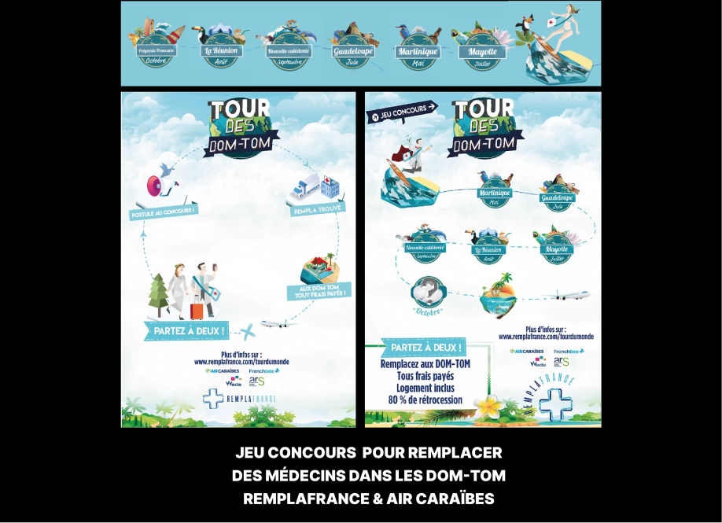
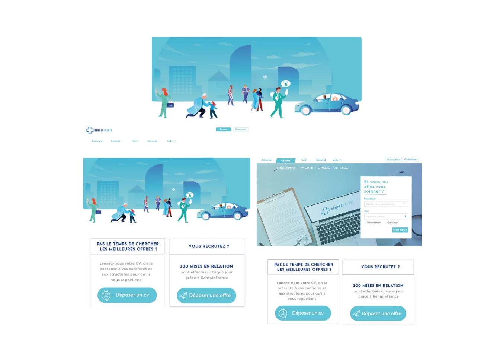

<!-- navbar section ends -->
<!-- portfolio section starts  -->
<link rel="stylesheet" href="https://cdnjs.cloudflare.com/ajax/libs/font-awesome/5.15.4/css/all.min.css">
<link href="img.css" rel="stylesheet" type="text/css" media="all" />
<link rel="stylesheet" href="../css/style.css">
<section class="portfolio">
    <div class="description"><a href="../18/18.html" class="btn">  précédent <i class="fas fa-redo"></i> </a>
        <a href="https://incodewetrust.netlify.app/" class="btn">  Accueil<i class="fas fa-home"></i></a>     
        <a href="../20/20.html" class="btn">  suivant <i class="fas fa-redo"></i> </a>
        <br></br>
        <h1 class="heading"> <span>Remplafrance</span><br>Start-up santé basé sur le recrutement médical par spécialités, identité de marque</h1>
        <p>Remplafrance est une start-up médical qui permet au praticiens de trouver un remplaçant et/ou remplacement dans toute la France</p>
         <div class="box-container-fluid">
                         <div>
                            
                        </div>
                         <div>
                            
                        </div>
                         <div>
                            

                        </div>
                         <div>
                            
                        </div>  
        </div>   
    <a href="https://webdesign.adoubeweb.fr" class="btn"> Revenir <i class="fas fa-redo"></i> </a>
</section>

<!-- portfolio section ends -->
